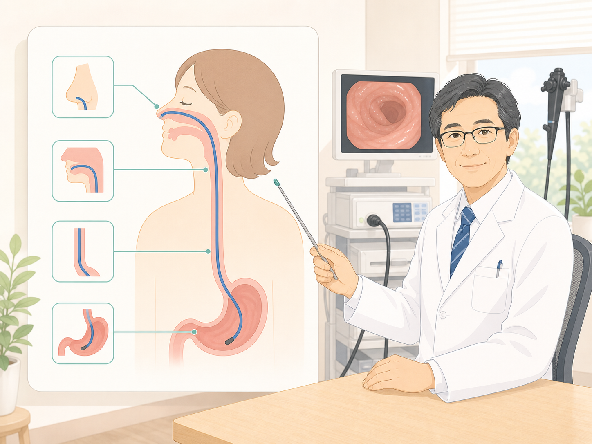
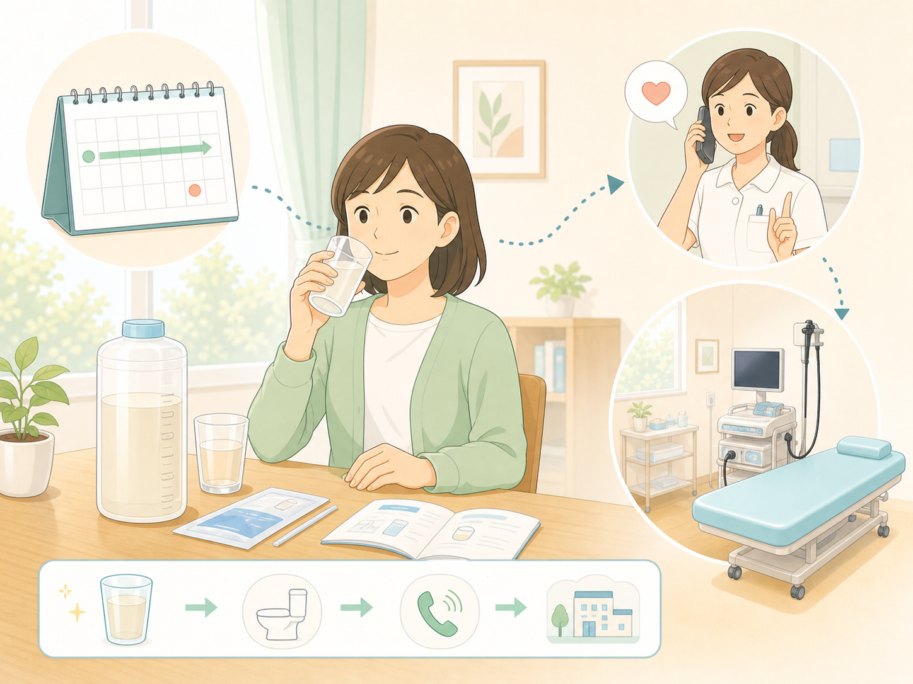
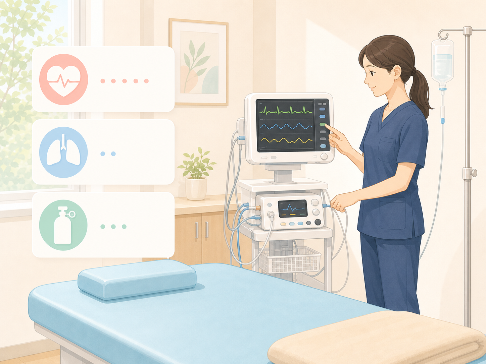

検査前に説明を受ける
検査の流れ、食事や薬の注意点、当日の過ごし方を確認してから進めます。
胃カメラ・大腸カメラを受ける方へ
検査前に知っておきたい流れ、苦痛を抑える工夫、鎮静剤の注意点を確認できます。

検査の流れを図で確認
検査の流れ、食事や薬の注意点、当日の過ごし方を確認してから進めます。

鼻から細いスコープを入れる検査です。口からの検査より吐き気が少ない場合があります。

自宅で前処置を行い、看護師と状態を確認しながら午後の検査につなげます。

呼吸や循環の状態を確認しながら行います。検査後は車を運転して帰宅できません。
当院は消化器内視鏡技師を中心として丁寧に検査説明と術中術後の看護を行い、患者さまが安心して検査を受けられる体制を整えています。
検査後は撮影した内視鏡画像を医師が懇切丁寧にご説明致します。
鼻から挿入する胃カメラは従来の口から挿入する胃カメラと比べて苦痛が少なく“おえおえ”することがほとんどありません。検査中に医師と会話することも可能です。
手術後などで鼻の通りが悪い方は、お口から挿入しますがスコープが細いため楽に検査を受けることができます。
当院ではご自宅で大腸をきれいにするお薬を内服していただき前処置の状態を看護師と連絡を取りながら午後から来院していただき検査を行っています。
大腸がん検診で異常を指摘された方、便に血が混じる方、排便状態に異常がある方は大腸内視鏡検査をお勧めします。
当院は光学拡大スコープを使用しており抗血栓薬（血をさらさらにする薬）を飲んでいる患者さまでも詳細に拡大観察することで病理診断（組織を取って調べること）に近い診断が可能です。大腸ポリープの内視鏡的手術（ポリペクトミー）や鎮静剤を使用した大腸内視鏡検査も行っています。
鎮静剤は呼吸状態の悪化や検査後の転倒の原因となることがあります。検査中は心電図モニターを装着し十分安全に注意して行っていますが、高齢などで心肺機能が低下している患者さまには投与できません。また安全のため自動車を運転して帰宅することはできません。